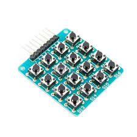
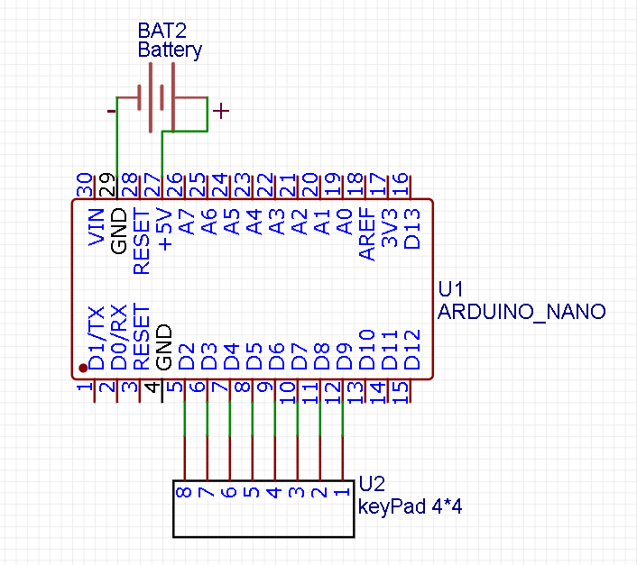

Кодовый замок
Для создания кодового замка понадобится:
- Arduino nano
- матричная клавиатура
- батарейка питания

Принцип работы
Принцип работы заключается втом что при помощи матричной клавитуры 4х4 будет набираться код, состоящий из цифр. Набраный код будет выводиться в serial порт. После нажатия определённой кнопки будет сравниваться правильный код с введёным.
Схема подключения:
Прогромирование
Для прогромирования понадобится библиотека для работы с матричной клавиатурой.
Кодс пояснениями:
#include <Keypad.h> // Подключение библиотеки Keypad
const byte ROWS = 4; // Количество рядов
const byte COLS = 4; // Количество строк
char keys[ROWS][COLS] =
{
{'1','2','3','A'},
{'4','5','6','B'},
{'7','8','9','C'},
{'*','0','#','D'}
};
byte rowPins[ROWS] = {9, 8, 7, 6}; // Выводы, подключение к строкам
byte colPins[COLS] = {5, 4, 3, 2}; // Выводы, подключение к столбцам
byte trueKey[4]={0,0,0,0};//правильный четырёхзначный код
byte key1[4]={0,0,0,0};//текущий код
int step=0;//каккой символ по счету вводится
Keypad keypad = Keypad( makeKeymap(keys), rowPins, colPins, ROWS, COLS );
void setup()
{
Serial.begin(9600); // Открываем последовательную связь на скорости 9600
}
void loop(){
char key = keypad.getKey(); // Читаем состояние кнопок
if (key){
key1[step]=int(key);//записываем в массив считаный знак
step++;//прибавляем шаг
if (key=="D"){//если нажата клавиша для проверки кода
int check=1;//вспомогательная перемнная
for(int i=0; i<=3; i++){//цикл на 4 шага
if (key1[i]!=trueKey[i]){//сравниваем массивы
check=0;//если элементы массивов не совпали
}
}
if (check==1){//если масивы совпали
Serial.print("true");
}
else{//если массивы не совпали
Serial.print("false");
}
}
Serial.print("Key Pressed : ");
Serial.println(key);
}
}